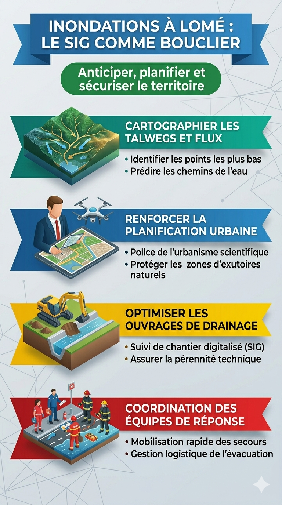

Analyse | 06 Mai 2026
Inondations à Lomé : Sortir de la Fatalité par l'Intelligence Spatiale
Les rapports de ReliefWeb (mai 2024) sont sans appel : des milliers de sinistrés dans le Grand Lomé, notamment à Bè Ahligo et Léo 2000. Comme l'établit Yvette Veyret dans Géographie des risques, l'inondation est un risque « construit » par des choix d'aménagement défaillants.
Le constat critique : La gestion actuelle repose trop souvent sur le pompage d'urgence, une réponse curative critiquée pour son inefficacité face au manque de volonté politique d'achever les réseaux de drainage structurants (Source: 27avril).
Le SIG comme bouclier territorial

Pour KGM EXPERTISE, la solution réside dans la Modélisation Numérique de Terrain (MNT). Nous aidons les communes à identifier les zones de talwegs et à imposer une police de l'urbanisme scientifique. Planifier le drainage en suivant la gravité naturelle est la seule voie pour protéger durablement les populations du Grand Lomé.
Par KODOMMA Gnimdou M., gestionnaire des collectivités locales & Expert SIG.